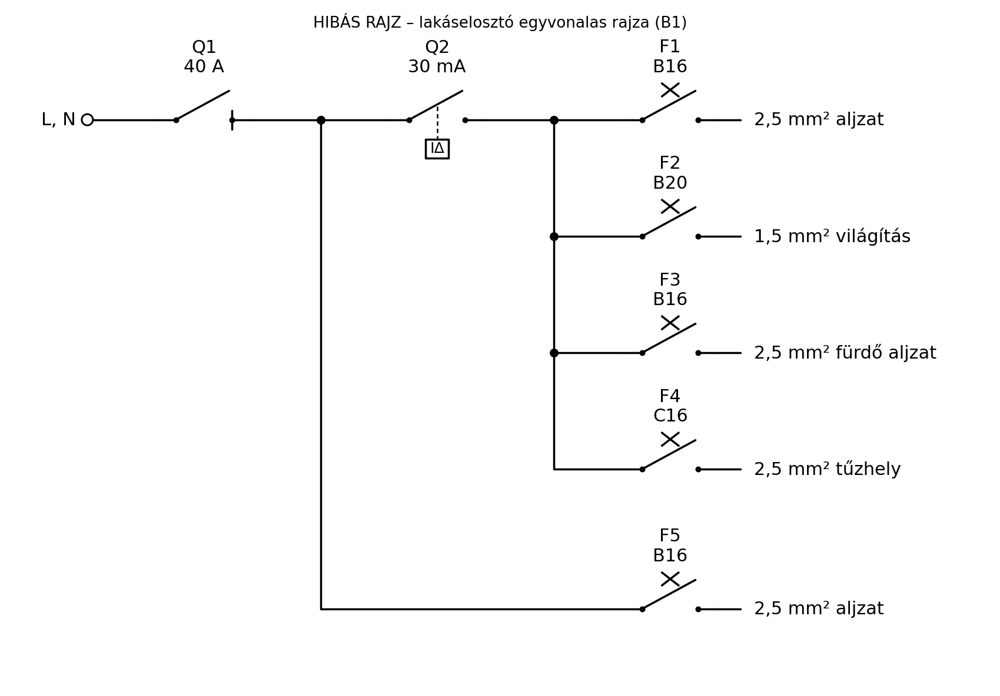
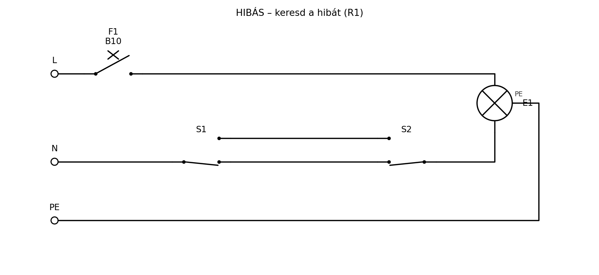
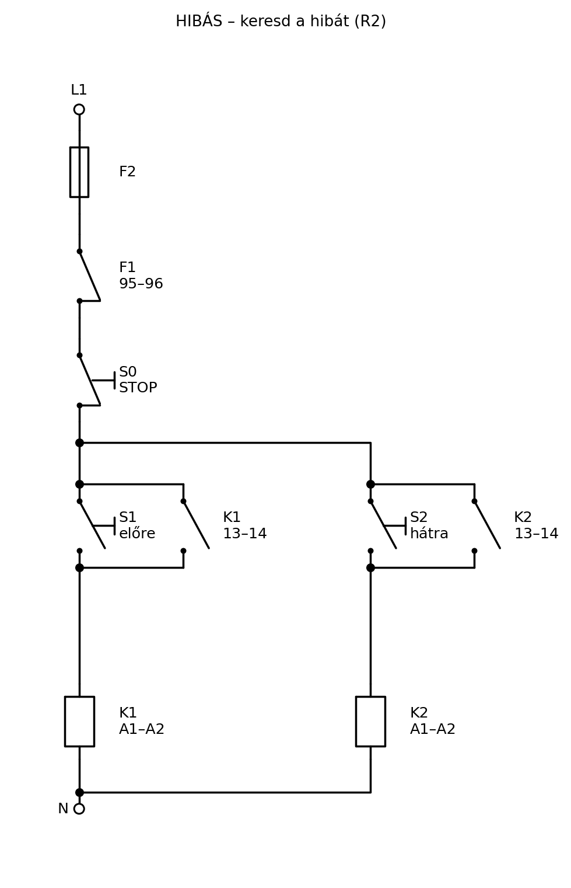
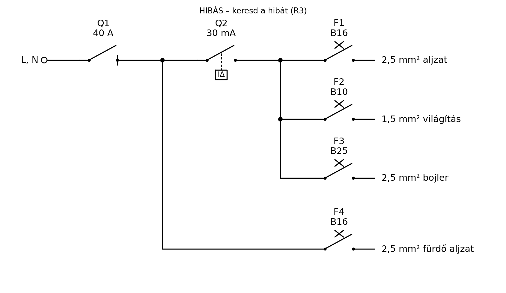
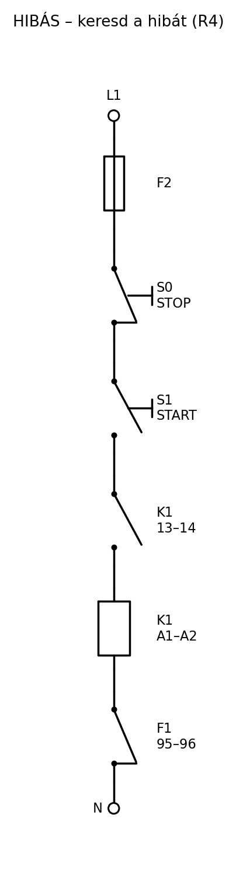
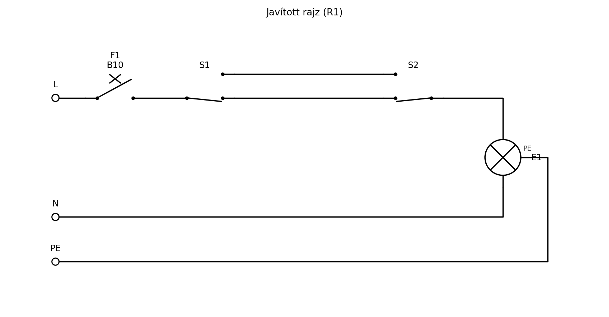
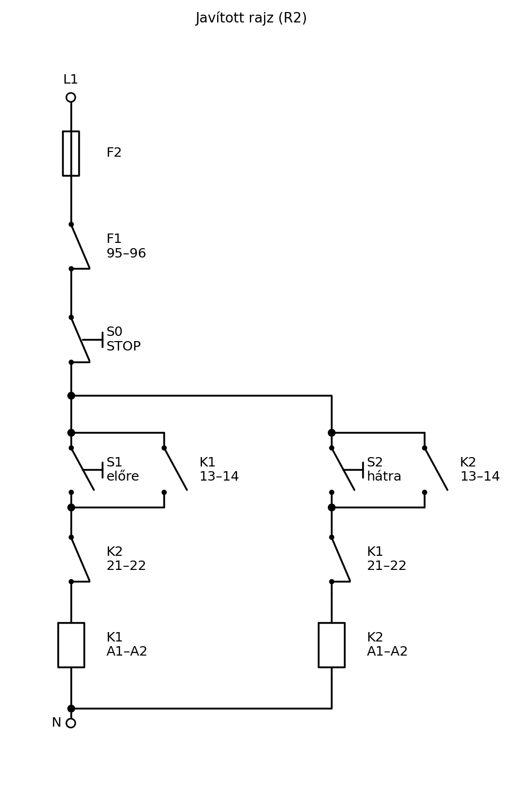
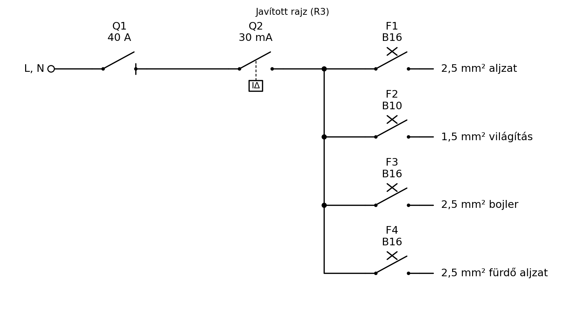
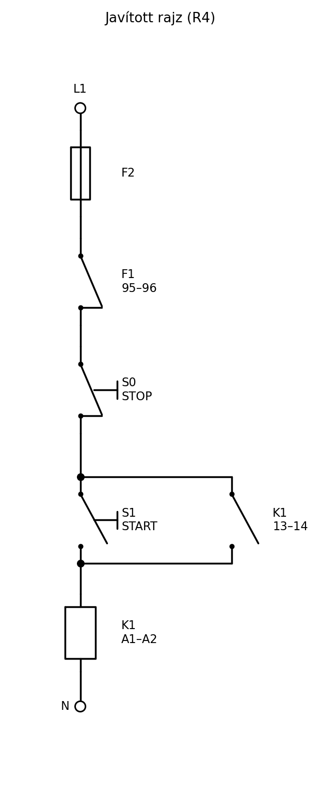
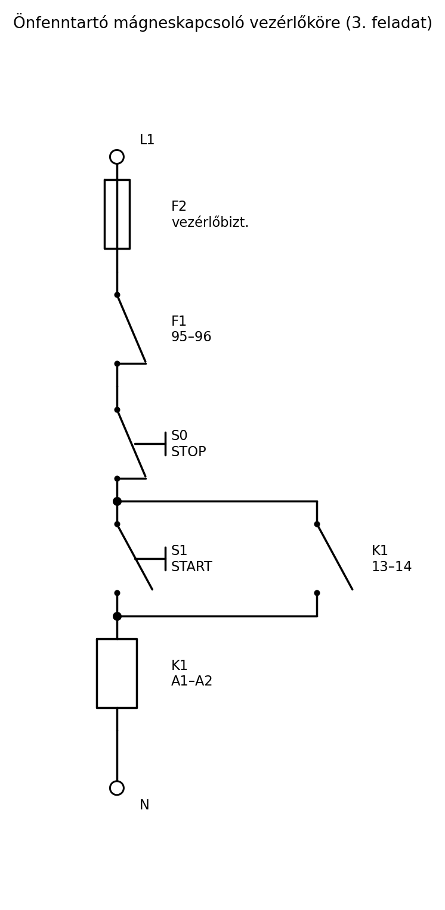

![Fázisjavító kondenzátorfokozat bekötése (háromvonalas elvi rajz) - A gyűjtősínről a háromsarkú Q1 szakaszolókapcsolón, az F1–F3 olvadóbiztosítókon és a K1 fokozatkapcsoló kontaktoron át kapcsolódik a deltába kötött C1–C3 kondenzátorfokozat; mindegyik kondenzátorral párhuzamosan egy kisütő ellenállás (R1–R3) van, amely a lekapcsolt kondenzátort kisüti (ellenőrizendő: a kisütési időre és maradékfeszültségre vonatkozó előírás, MSZ EN 60831). Elvi vázlat, nem kivitelezési rajz; a fém tokozat PE-bekötése nincs feltüntetve.](assets/ve157-diagram-1.png)
A kapcsolódó elmélet: tankönyv, 44.2 alfejezet.
Gyakorlati szabály. A vizsgán először nézd át a teljes feladatsort, és a pontszámok arányában ossz be időt. Ha elakadsz egy feladattal, lépj tovább; a vizsga végén térj vissza hozzá. Minden számításnál írd ki a képletet, a behelyettesítést és a mértékegységet – még akkor is, ha az eredmény hibás, a helyes elv és a mértékegység sok pontot ér.
| Rész | Tartalom | Feladatok | Javasolt idő |
|---|---|---|---|
| A | Alapfogalmak, védelem, mérés | 2×5 rövid kérdés | 25 perc |
| B | Rövid válaszok, rajzolvasás | 3 feladat | 25 perc |
| C | Számolási feladatok | 5 feladat | 50 perc |
| D | Gyakorlati hibakeresés, vezérlésértékelés | 1 feladat | 20 perc |
A minta 100 pontos, a javasolt idő 120 perc. A vizsgaidő tájékoztató jellegű; a képzési követelmények szerint ellenőrizendő.
Vizsgaszerkezet (egységes megjegyzés). A szakmai vizsga részeinek neve, száma, időtartama és pontozása a hatályos képzési és kimeneti követelményektől (programkövetelménytől) és a vizsgaszabályzattól függ; a 2020 utáni szakképzési rendszerben a vizsga jellemzően központi interaktív (írásbeli jellegű) vizsgarészből és projektfeladatból áll (ellenőrizendő: hatályos vizsgaleírás, a képző intézmény tájékoztatója). A könyv elméleti, számolási, rajzolvasási, szerelési, mérési, hibakeresési és szóbeli feladattípusai tanulási csoportosítás; az időkeretek és pontszámok tanulási javaslatok.
Minden helyes válasz 2 pont, indoklás nélkül is jár, de az órai elemzésben indokold.
A1/A. Melyik vezetékszín jelöli a védővezetőt?
a) barna, b) világoskék, c) zöld-sárga, d) szürke
Megoldás: c) zöld-sárga. A barna/fekete/szürke a fázis,
a világoskék a nulla.
A1/B. Melyik készülék nyújt 30 mA érzékenységgel
kiegészítő védelmet alapvédelmi hiba esetén?
a) olvadóbiztosító, b) kismegszakító, c) áram-védőkapcsoló, d)
hőkioldó
Megoldás: c) áram-védőkapcsoló (RCD). A
névleges hibaáramú kivitel a személyvédelmi célú kiegészítő védelem.
A1/C. Hány volt a vonali feszültség a hazai 230/400
V-os hálózatban?
a) 230 V, b) 380 V, c) 400 V, d) 420 V
Megoldás: c)
.
A1/D. Mekkora a hatásos teljesítmény, ha
,
,
?
a) 2,3 kW, b) 23 kW, c) 4,6 kW, d) 0,23 kW
Megoldás: a)
.
A1/E. A motor pólusszáma
,
a hálózati frekvencia 50 Hz. Mekkora a szinkron fordulatszám?
a) 750 1/min, b) 1000 1/min, c) 1500 1/min, d) 3000 1/min
Megoldás: c)
,
mert
pólus esetén a póluspárszám
.
Minden válasz 2 pont.
A2/A. Mi a célja a hurokimpedancia mérésének
TN-rendszerben?
Megoldás: Annak ellenőrzése, hogy a védőeszköz a
megengedett időn belül leold-e:
,
ahol
a hibahurok impedancia,
a védő kioldási árama,
.
A2/B. Milyen feszültséggel mérjük jellemzően az
épületvillamos berendezés szigetelési ellenállását?
Megoldás: 500 V egyenfeszültséggel. A határértékek
szabvány szerint változhatnak, ezért a mérési jegyzőkönyvben a
ténylegesen alkalmazott követelményt kell rögzíteni
(ellenőrizendő: aktuális MSZ HD 60364-6 és a
vizsgakövetelmény).
A2/C. Mit jelent az IP44 jelölés második
számjegye?
Megoldás: A második számjegy a víz elleni védettséget
jelöli; a 4 fröccsenő víz elleni védelmet jelent. Az első számjegy a
szilárd testek elleni védelmet jelzi, itt 1 mm-nél nagyobb tárgyak
ellen.
A2/D. Melyik hálózati rendszerben van külön PE és N
vezető a teljes fogyasztói hálózaton?
Megoldás: TN-S rendszerben. TN-C-S-ben a csatlakozási
hely után válik szét a PEN; a fogyasztói oldalon már szintén külön kell
vezetni a PE-t és N-t.
A2/E. Mi a célja a mérési kategória (CAT) jelölésnek
a multiméteren?
Megoldás: Megmutatja, hogy a műszer milyen hálózati
környezetben használható biztonságosan, mekkora tranziens feszülcsúcsot
képes elviselni. Ipari elosztóban CAT III vagy CAT IV szükséges.
Feladat (8 pont). Párosítsd a fogalmat a jellemző készülékkel vagy szerepével, és indokold egy mondatban!
Megoldás:
alapvédelem → b, mert a feszültség alatti részek közvetlen érintését
gátolja;
hibavédelem → d, mert hiba esetén a védőeszköz leválaszt;
túláramvédelem → a, mert a védőeszköz névleges árama nem lehet nagyobb a
vezeték terhelhetőségénél;
kiegészítő védelem → c, mert többletvédelmet ad.
Feladat (8 pont). Írd fel a vezeték méretezésénél használt két legfontosabb szabályt, és magyarázd el egy konkrét, üzemi áramú, terhelhetőségű vezetéknél.
Megoldás:
A méretezési alapelvek az
és a védő egyezményes kioldóáramára vonatkozó második feltétel
(ellenőrizendő: MSZ HD 60364-4-43).
A tanulható alak:
ahol az üzemi áram, a védő névleges árama, a vezeték tartós terhelhetősége, a védő kioldó áramának szabványos egyezményes értéke. Példa: üzemi áram, → vagy választható. Kismegszakítónál teljesül ( esetén automatikusan). A védő a zárlati és hurokimpedancia-vizsgálat után megfelelő.
A fogalmi megfogalmazás mellett a képlet pontosságánál nem szabad olyan értéket kimondani, amit a szabványkiadás módosíthat; a mértékegység-ellenőrzés mindig helyes.
Feladat (12 pont). Az alábbi kapcsolást építed meg tanműhelyben: S0 nyitó nyomógomb (STOP), S1 záró nyomógomb (START), K1 mágneskapcsoló A1/A2 tekercs, a 13/14 segédzáró párhuzamosan az S1-gyel, és a 95/96 hőkioldó nyitó érintkező sorba kötve a tekercskörrel. Bekapcsoláskor a motor elindul, de a nyomógomb elengedésekor azonnal leáll. Rajzold le, mi a hiba, és milyen méréssel igazolod?
Megoldás: A nyomógomb elengedése után kizárólag az önfenntartó 13/14 érintkező tarthatná meg a K1 tekercset. A hiba az, hogy a 13/14 segédkapocs nem párhuzamos az S1 kapcsolóval, vagy a segédzáró érintkezője nem zár rendesen.
Méréssel: feszültségmentes állapotban csengessük ki az S1 kötéspontjaitól a K1 13/14 kapcsokig. Ha a huzalozás helyes, feszültségmentes állapotban a mágneskapcsoló mozgó részét kézzel (vagy a próbabenyomóval) behúzva a 13/14 kapcsok között közel -ot, elengedve szakadást kell mérni. Tipikus hiba, hogy a 13/14 nem zár, mert a segédérintkező-blokk mechanikus kapcsolata megszakadt vagy az érintkező szorul, illetve a K1 14-es kapcsára nem kötöttük be az S1 14-es kapcsától (a tekercs A1 felől) jövő vezetéket.
Biztonsági korlát. A feladat tanműhelyi környezetre vagy jogosult oktató felügyeletére vonatkozik; hálózati feszültségen önállóan ne végezd.
Feladat (8 pont). Két áramkört közös elosztóban, kikapcsolt állapotban vizsgálsz. Az első szigetelési ellenállása , a másodiké . Ha a két mért áramkört párhuzamosan kapcsolva méred, mekkora eredő ellenállást várhatsz?
Adott:
,
Keresett:
Képlet: párhuzamos kapcsolás:
Behelyettesítés:
Ellenőrzés: kisebb a -nál is, ami párhuzamos kapcsolásnál helyes.
Feladat (8 pont). 230 V-os, áramú áramkört építesz hosszú rézvezetékkel. A megengedett feszültségesés . Mekkora minimális vezető-keresztmetszet kell? .
Adott:
,
,
,
,
.
Keresett:
.
Képlet: Kétvezetős egyfázisú körben a teljes oda-vissza
vezeték hossza
,
így
Behelyettesítés:
Eredmény: A szabványos keresztmetszet-lépcsőből
vezetéket választunk.
Ellenőrzés: A 4 mm²-es vezető ellenállása
,
a feszültségesés
,
ami
,
tehát a megengedett 3% alatt marad.
Feladat (10 pont). Egy aszinkronmotor adattáblája: , , . A cél . Mekkora kondenzátortelep teljesítményt kell beépíteni?
Adott:
,
,
,
.
Keresett:
.
Első lépés: a hálózatból felvett hatásos teljesítmény.
Második lépés: a meddő teljesítmények.
A összefüggésből:
Harmadik lépés: a szükséges kondenzátorteljesítmény.
Eredmény: A legközelebbi szabványos lépcső (, a cél közel teljesül) vagy (); az túlméretezett (maradó meddő , , és a lekapcsolt, kifutó motor önmágnesezése túlfeszültséget okozhat). Egyedi motorkompenzálásnál a kondenzátor ne haladja meg a motor üresjárási meddőjének kb. 90%-át (ellenőrizendő: gyártói adat). Ne kompenzáld a teljes meddőt. Az ábrán egy kondenzátortelep elvi bekötése látható.
A rajzon a három fázisvezető a Q1 szakaszolókapcsolón, az F1–F3 biztosítókon és a K1 fokozatkapcsoló kontaktoron át jut a deltába kötött három kondenzátorhoz (C1: L1–L2, C2: L2–L3, C3: L3–L1); minden kondenzátorral párhuzamosan egy kisütő ellenállás van, így a lekapcsolt fokozat kondenzátorai az ellenálláson keresztül kisülnek.
Feladat (8 pont). Egy 4 pólusú aszinkronmotor adattáblája szerint a névleges fordulatszám , a hálózati frekvencia . Számítsd ki a szinkron fordulatszámot, a szlipet és a forgórészben indukált feszültség frekvenciáját névleges üzemben!
Adott:
pólus, tehát póluspárszám
;
,
.
Keresett:
,
,
.
Szinkron fordulatszám:
Szlip:
Forgórészfrekvencia:
Ellenőrzés: Kis teljesítményű aszinkronmotornál névleges terhelésen a 3–5%-os szlip reális.
Feladat (8 pont). Egy háromfázisú elosztótranszformátor adatai: , , . Mekkora a névleges vonali áram és az elvi zárlati áram a kisfeszültségű kapcsokon, ha a hálózati oldal merevnek tekinthető?
Adott:
,
,
.
Keresett:
és
.
Névleges vonali áram:
Elvi zárlati áram:
Ellenőrzés: , ebből .
Ezért a főelosztó megszakítójának a megszakítóképességét a várható zárlati áramnál nagyobbra kell választani.
Feladat (10 pont). Egy reverzáló motorvezérlésnél a motor csak az egyik irányba indul. A másik irány nyomógombjának megnyomásakor semmi nem történik, és nem is húz be a megfelelő mágneskapcsoló. Ismertesd a hibakeresés lépéseit!
Megoldás: tünet, mérés, lehetséges ok,
javítás.
A hibát a rajz–valóság–mérés hármas szerint
keressük.
Biztonsági korlát. A vezérlési hibakeresés tanműhelyi környezetben vagy jogosult oktató felügyeletével történjen. Hálózati feszültségű munka esetén mindig az öt biztonsági szabályt kell betartani.
A vizsgán nem elég „tudni”, a pontszerzéshez a megoldást is úgy kell leírni, hogy az értékelő követni tudja. A pontszámodat több tényező csökkenti: hiányzó mértékegység, képlet nélküli behelyettesítés, hibás nagyságrend, nem ellenőrzött eredmény, rajzjel helytelen használata, biztonsági lépések elhagyása a gyakorlati feladatban.
A mintafeladatsor után készíts egyszerű hibanaplót:
| Témakör | Feladat | Kapott pont | Hibát okozó ok | Melyik alfejezetet ismételd? |
|---|---|---|---|---|
| Alapfogalmak | A1 | …/10 | … | 10.2 (tankönyv, 10.2), 21.4 (tankönyv, 21.4), 7.1 (tankönyv, 7.1), 6.4 (tankönyv, 6.4), 26.2 (tankönyv, 26.2) |
| Védelem és mérés | A2 | …/10 | … | 24.3 (tankönyv, 24.3), 24.2 (tankönyv, 24.2), 34.3 (tankönyv, 34.3), 21.2 (tankönyv, 21.2), 8.2 (tankönyv, 8.2) |
| Védelmi fogalmak | B1 | …/8 | … | 21.1 (tankönyv, 21.1), 18.3 (tankönyv, 18.3) |
| Méretezési szabály | B2 | …/8 | … | 10.3 (tankönyv, 10.3), 18.3 (tankönyv, 18.3) |
| Rajzolvasás | B3 | …/12 | … | 32.1 (tankönyv, 32.1), 32.5 (tankönyv, 32.5) |
| Szigetelési ellenállás | C1 | …/8 | … | 4.2 (tankönyv, 4.2), 24.2 (tankönyv, 24.2) |
| Vezetékméretezés | C2 | …/8 | … | 10.4 (tankönyv, 10.4) |
| Fázisjavítás | C3 | …/10 | … | 36.1 (tankönyv, 36.1), 6.4 (tankönyv, 6.4) |
| Gépek | C4 | …/8 | … | 26.2 (tankönyv, 26.2) |
| Transzformátor | C5 | …/8 | … | 25.1 (tankönyv, 25.1), 25.3 (tankönyv, 25.3), 18.4 (tankönyv, 18.4) |
| Hibakeresés | D1 | …/10 | … | 32.2 (tankönyv, 32.2), 32.5 (tankönyv, 32.5) |
| Feladat | Részpontok |
|---|---|
| Számolás, 8 p (C1, C2, C4, C5) | képlet betűkkel 2; helyes behelyettesítés mértékegységgel 2; eredmény 2; ellenőrzés vagy a választás indoklása 2 |
| C3, 10 p | 2; a két 3; 3; lépcsőválasztás indoklással 2 |
| B3, 12 p | a hiba megnevezése 4; a mérés leírása 4; biztonsági feltétel 2; javítás 2 |
| D1, 10 p | tünet és hipotézisek 3; mérési sorrend feszültségmentesen 4; ok és javítás 2; megelőzés 1 |
| Rövid kérdés, 2 p (A1, A2) | helyes válasz 2; a rövid válasznál hiányos indoklás 1 |
| B1, B2, 8 p | B1: párosításonként 2 (a pár 1, indoklás 1); B2: két szabály 4, jelölések 2, számpélda 2 |
Biztonsági szabály: ha a megoldás veszélyes eljárást javasol (például ellenállásmérést feszültség alatt, védelem áthidalását vagy a PE megszakítását), a teljes feladat 0 pont, akkor is, ha a többi része jó.
| Eredmény | Értékelés | Mit tegyél? |
|---|---|---|
| 0–39 % | nem felelt meg | menj végig a hibanapló alfejezetein, oldd meg a témakörönkénti feladatbank A és B feladatait, majd ismételd az 1. sort |
| 40–59 % | elégséges szint | a gyenge témák B és C feladatai, utána a 2. mintafeladatsor |
| 60–79 % | jó | a 3. mintafeladatsor és a rajzolvasási gyakorlósor időre |
| 80–100 % | biztos tudás | vegyes vizsgaszimuláció és szóbeli tételek |
100 pont, 120 perc (A 20 p, B 20 p, C 45 p, D 15 p). A megoldásokat csak a teljes sor után nézd meg. A határértékek tanulási értékek (ellenőrizendő).
B1 (8 p). Az egyvonalas lakáselosztó-rajzon két hiba van. Keresd meg és indokold őket.

B2 (6 p). Írd le a váltókapcsolás áramútját a betáplálástól a nulláig (S1, S2 váltókapcsoló, E1 lámpa), és add meg a PE útját.
B3 (6 p). Jegyzőkönyvrészlet (a feladat adata, 500 V DC mérőfeszültség, követelmény legalább 1 MΩ – ellenőrizendő): L–PE 0,4 MΩ; L–N 50 MΩ; N–PE 0,3 MΩ. Megfelel-e a kör, mire utal az eredmény, és mi a teendő?
C1. Egy 3,5 kW-os ohmos fogyasztó 230 V-os körön van, a nyomvonal 25 m, a vezeték 2,5 mm² réz (). Számítsd ki az áramot, a két ér együttes ellenállását és a feszültségesést (V és %).
C2. V. Mekkora a legnagyobb megengedett C16 és B16 kismegszakítónál (C: , B: – ellenőrizendő)? A mért érték 1,1 Ω: melyik felel meg?
C3. TT-rendszerben a mért . Megfelel-e 30 mA-es és 300 mA-es FI-vel (50 V)? Mekkora a legnagyobb érintési feszültség 300 mA-nél?
C4. 6 m × 5 m-es irodában 300 lx kell; UF = 0,5, MF = 0,8, egy lámpatest 3 600 lm. Mekkora az összes szükséges fényáram, és hány lámpatest kell?
C5. 80 literes villanybojler a vizet 15 °C-ról 60 °C-ra melegíti ( kJ/(kg·K), 1 liter = 1 kg), , a fűtőbetét 2 kW, az energia ára 70 Ft/kWh (tanulási ár). Mennyi a hasznos hő, a felvett energia, a fűtési idő és a költség?
A fürdőszobai lámpa bekapcsolásakor azonnal leold a FI-relé; kikapcsolt lámpánál nem. Írd le a teljes hibakeresést: biztonság, hipotézisek, mérések, javítás és ellenőrzés.
A rész: 1 – b; 2 – b; 3 – b (); 4 – a; 5 – c; 6 – b; 7 – b (ellenőrizendő: MSZ HD 60364-5-514); 8 – b; 9 – b; 10 – c.
B1 (hibánként 4 p). (1) F2 B20 védi az 1,5 mm²-es világítási vezetéket: (a tanulási terhelhetőség a szerelési módtól függően kb. 14–19,5 A; ellenőrizendő) – B10 kell. (2) Az F5 aljzatkör a FI-relé előtt ágazik le, nincs 30 mA-es kiegészítő védelme – a Q2 mögé (vagy saját RCBO-ra) kell kötni.
B2. L → kismegszakító → S1 közös kapocs → az egyik váltóvezeték → S2 közös kapocs → E1 → N. Akkor ég a lámpa, ha a két kapcsoló ugyanarra a váltóvezetékre kapcsol. A PE a betáptól megszakítás nélkül a lámpatest PE-kapcsára (és a dobozokban tovább) megy; kapcsolón nem halad át.
B3. Nem felel meg: az L–PE és az N–PE érték 1 MΩ alatt van, az L–N jó. Mindkét hibás mérés a PE felé mutat, ezért közös helyre (például beázott doboz vagy lámpatest) utal. Teendő: a kört nem helyezed üzembe; feszültségmentesen, a szakaszokat és fogyasztókat egyenként leválasztva behatárolod, javítod, majd újra mérsz.
C1. A; ; V, ami .
C2. C16: A, ; B16: A, . Az 1,1 Ω mindkettőnél megfelel (hidegen mért értéknél a tartalékot is mérlegeld; ellenőrizendő).
C3. Határ 30 mA-nél , 300 mA-nél ; a 85 Ω mindkettőnek megfelel. V.
C4. lm; , felfelé: 7 db.
C5. kJ kWh; felvett kWh; h; költség Ft.
D (biztonság 3, hipotézisek 3, mérés 5, javítás és ellenőrzés 4). Öt biztonsági szabály. Hipotézisek: a lámpatestben az N és a PE össze van kötve vagy fel van cserélve; beázott lámpatest; sérült szigetelés a kapcsolt fázis és a PE között. Mérés feszültségmentesen: a kör N-vezetőjét az elosztóban leválasztva N–PE szigetelés 500 V DC-vel (közel 0 Ω: N–PE kapcsolat); kapcsolt fázis–PE zárt kapcsolóval (az érzékeny elektronikát előtte leválasztva); behatárolás a lámpatest leválasztásával. Javítás, ismételt szigetelés- és folytonosságmérés, visszakapcsolás, FI-próbagomb és műszeres FI-vizsgálat.
| Témakör | Feladat | Kapott pont | Hibát okozó ok | Melyik alfejezetet ismételd? |
|---|---|---|---|---|
| Alapismeretek | A | …/20 | … | 16.2 (tankönyv, 16.2), 21.3 (tankönyv, 21.3), 18.2 (tankönyv, 18.2), 24.2 (tankönyv, 24.2), 22.2 (tankönyv, 22.2) |
| Elosztó-rajz | B1 | …/8 | … | 17.2 (tankönyv, 17.2), 18.3 (tankönyv, 18.3), 21.4 (tankönyv, 21.4) |
| Váltókapcsolás | B2 | …/6 | … | 16.2 (tankönyv, 16.2) |
| Szigetelésmérés | B3 | …/6 | … | 24.2 (tankönyv, 24.2) |
| Feszültségesés | C1 | …/9 | … | 10.4 (tankönyv, 10.4) |
| Kioldási feltétel, TT | C2, C3 | …/18 | … | 21.3 (tankönyv, 21.3) |
| Világítástervezés | C4 | …/9 | … | 19.2 (tankönyv, 19.2) |
| Energia, hő | C5 | …/9 | … | 3.3 (tankönyv, 3.3) |
| Hibakeresés | D | …/15 | … | 21.4 (tankönyv, 21.4), 40.3 (tankönyv, 40.3) |
100 pont, 120 perc (A 20 p, B 20 p, C 45 p, D 15 p).
B1 (10 p). Reverzáló vezérlés áramútja villamos reteszelés nélkül: F2 → F1 95–96 → S0 (STOP) → két ág: (a) S1 ∥ K1 13–14 → K1 A1–A2 → N; (b) S2 ∥ K2 13–14 → K2 A1–A2 → N. Rajzold le, egészítsd ki a reteszeléssel (a kapocsszámokkal), és magyarázd meg, miért kell mellé mechanikus retesz is.
B2 (10 p). Csillag–delta indító főáramköre: sorold fel kapocsszinten, melyik mágneskapcsoló mit köt össze (K1 hálózati, K2 csillag, K3 delta), és mit kell reteszelni.
C1. Háromfázisú motor: 15 kW, , , 400 V. Mekkora a névleges áram, és mire állítod a hőkioldót, ha csillag–delta indításnál a fázistekercs ágában van?
C2. A C1 motor indítási árama közvetlen indításnál . Mekkora közvetlen és csillag–delta indításnál, és hogyan változik az indítónyomaték?
C3. 4 pólusú, 15 kW-os motor, 1/min. Mekkora a nyomaték és a szlip?
C4. Egyfázisú transzformátor 230/24 V, 100 VA, a primer 920 menet (ideálisnak tekintve). Mekkora , és ?
C5. 6 kvar-os fázisjavító fokozat deltában, 400 V, 50 Hz. Mekkora egy fázis kapacitása?
Csillag–delta indításnál a motor csillagban felpörög, az időrelé lejár, a K2 elenged, de a K3 nem húz be; a motor kifut. Add meg a hipotéziseket, a feszültségmentes méréseket és a javítás utáni ellenőrzést.
A rész: 1 – b; 2 – b; 3 – b; 4 – b; 5 – b; 6 – a; 7 – b (); 8 – c; 9 – a (); 10 – b.
B1. A K1 tekercs elé, az (a) ágba sorosan a K2 21–22 bontó; a K2 tekercs elé, a (b) ágba a K1 21–22 bontó. A sorrend: S0 → S1 ∥ K1 13–14 → K2 21–22 → K1 A1; illetve S0 → S2 ∥ K2 13–14 → K1 21–22 → K2 A1. A mechanikus retesz azért kell, mert egy beragadt vagy összehegedt érintkező, rázkódás vagy a készülék kézi benyomása mellett a villamos retesz nem akadályozza meg, hogy mindkét kontaktor zárjon – ez fázisok közti zárlat.
B2. K1: L1 → U1, L2 → V1, L3 → W1. K2: W2–U2–V2 összezárása (csillagpont). K3 (a K1 utáni oldalról táplálva): L1 → W2, L2 → U2, L3 → V2, így a hidak U1–W2, V1–U2, W1–V2. A K2 és a K3 villamosan (kölcsönös bontóérintkezővel) és mechanikusan is reteszelt.
C1. A; a fázistekercs-ágban a beállítás A.
C2. Közvetlen: A; csillag–delta: A. Az indítónyomaték is a harmadára csökken, ezért csak kis indítási terheléshez jó.
C3. N·m; .
C4. A; A; menet.
C5. .
D (biztonság 3, hipotézisek 4, mérés 5, javítás és ellenőrzés 3). Hipotézisek: a K3 tekercsága előtti K2 21–22 reteszérintkező nem zár vissza; az időrelé késleltetett záró érintkezője hibás; a K3 tekercse szakadt; kötéshiba a K3 ágában. Mérések az öt biztonsági szabály betartása után: K2 21–22 ellenállása elengedett állapotban (közel 0 Ω várható); az időrelé érintkezője (a gyártói teszt- vagy kézi működtetés szerint); K3 A1–A2 tekercsellenállás (gyártói adattal összevetve); a vezetékek folytonossága a rajz kapocsszámai szerint. Javítás után a vezérlőkör kicsengetése, majd engedéllyel működési próba a motor nélkül (leválasztott főkörrel), végül terheléssel.
| Témakör | Feladat | Kapott pont | Hibát okozó ok | Melyik alfejezetet ismételd? |
|---|---|---|---|---|
| Alapismeretek | A | …/20 | … | 26.3 (tankönyv, 26.3), 31.3 (tankönyv, 31.3), 31.1 (tankönyv, 31.1), 32.3 (tankönyv, 32.3), 26.5 (tankönyv, 26.5) |
| Reteszelés | B1 | …/10 | … | 32.2 (tankönyv, 32.2) |
| Csillag–delta főkör | B2 | …/10 | … | 26.3 (tankönyv, 26.3), 32.3 (tankönyv, 32.3) |
| Motoradatok, indítás | C1–C3 | …/27 | … | 26.2 (tankönyv, 26.2), 26.4 (tankönyv, 26.4) |
| Transzformátor | C4 | …/9 | … | 25.1 (tankönyv, 25.1) |
| Fázisjavítás | C5 | …/9 | … | 36.1 (tankönyv, 36.1) |
| Hibakeresés | D | …/15 | … | 32.3 (tankönyv, 32.3), 32.5 (tankönyv, 32.5) |
Négy kapcsolási rajz, mindegyiken hiba van (R1: 6 p, R2: 8 p, R3: 8 p, R4: 6 p). Jelöld a hibát pirossal, nyomtatott példányon karikázd be, indokold 2–3 mondatban, és rajzold le a javított változatot. A rajzok alapállapotot mutatnak; csak papíron vagy tanműhelyben dolgozz velük.
R1 (6 p) – váltókapcsolás. Mi a hiba, és miért veszélyes?

R2 (8 p) – reverzáló vezérlőkör. Mit hiányzik, és mi történhet?

R3 (8 p) – lakáselosztó. Két hibát keress; a többi körre indokold, miért jó.

R4 (6 p) – direktindítás vezérlőköre. A START elengedésekor mi történik? Mi a hiba?

R1. A kapcsolók a nullavezetőt szakítják, a fázis közvetlenül a lámpára megy: kikapcsolt lámpánál is feszültség alatt van a foglalat, izzócserénél áramütés érhet. Javítás: L → F1 → S1 közös kapocs; S2 közös kapocs → E1 → N.

R2. Hiányzik a villamos reteszelés: ha mindkét kontaktor behúz, a főkörben fázisok közötti zárlat keletkezik. Javítás: a K1 tekercs elé a K2 21–22, a K2 elé a K1 21–22 bontó (mechanikus retesz mellett).

R3. (1) Az F3 B25 a 2,5 mm²-es vezetékre nagy: falban, védőcsőben vezetett kábel tanulási terhelhetősége kb. 18,5–24 A, így (ellenőrizendő) – B16 kell (egy 2–3 kW-os bojlerhez elég). (2) Az F4 fürdőszobai aljzatkör a FI-relé előtt ágazik le: nincs 30 mA-es kiegészítő védelme. Helyes: F1 B16 / 2,5 mm² és F2 B10 / 1,5 mm², mert .

R4. A K1 13–14 sorban van a START-tal, ezért a tekercs soha nem kap feszültséget: a 13–14 csak behúzott kontaktornál zár, behúzni viszont csak rajta keresztül lehetne. Javítás: 13–14 párhuzamosan az S1-gyel. A 95–96 helye a soros láncban működés szempontjából nem hiba, mert ott is megszakítja a tekercset; a konvenció azonban a fázisoldal, mert földelt vezérlőkörben a tekercs és a nulla közé tett érintkezőt egy földzárlat áthidalhatja (ellenőrizendő: MSZ EN 60204-1, 9.4.3). A javított rajz ezért oda teszi.

A mintafeladatsor néhány átolvasás után ismerőssé válik; a vizsga előtti utolsó hetekben tömeges, vegyes (nem témakörönként sorba rendezett) gyakorlás kell, időnyomás alatt. A HTML-kiadás vegyes vizsgagyakorlója a könyv 14 számolási témaköréből állít össze véletlen feladatsort: Ohm-törvény és teljesítmény, soros–párhuzamos eredő, feszültségosztó, Kirchhoff-hálózat két forrással, soros RLC-kör, motor (szlip, nyomaték, adattábla), vezeték és feszültségesés, kioldási feltétel, fázisjavítás, transzformátor, árkalkuláció, motoráram és háromfázisú feszültségesés, TT-rendszer védőföldelése, lámpaszám – mindegyik három vagy négy nehézségi szinten.
Három mód közül választhatsz: gyors teszt (10 feladat, 25 perc), vizsgaszimuláció (20 feladat, 60 perc) vagy témakör szerint (egy kiválasztott típus). Az óra visszafelé számol, feladatonként egy beküldés van (a tizedesvessző és a pont is elfogadott, előtag és mértékegység is írható; a rossz mértékegységet a lap jelzi), a tűrés ±1 %. Hibás válasznál a lap a tipikus hibát is megnevezi (például a motoráramnál a kihagyott vagy , a feszültségesésnél a 2-es és a -as szorzó cseréje, a lefelé kerekített lámpaszám), és lépésenként megmutatja a megoldást. A végén pontszámot, témakörönkénti eredményt és automatikusan kitöltött hibanaplót kapsz, amely minden hibás témakörhöz megadja az ismétlendő alfejezet számát. Ugyanaz a feladatszám (mag) ugyanazt a sort adja, így egy társaddal ugyanazt a tesztet is megírhatjátok.
A PDF-olvasó az alábbi rögzített sort oldhatja meg időre (javasolt idő: 30 perc). Pontozd magad a fenti pontozási szempontok szerint, és a hibás feladatok témakörét ismételd át.
Rögzített feladatsor. A rögzített gyakorlósor a vegyes gyakorló tizenkét témakörét fedi le (a 6–7. feladat ugyanarra a motorra épül). Oldd meg időre (30 perc), majd ellenőrizd a megoldókulccsal; a HTML-kiadásban a gyakorló végtelen sok hasonló sort ad.
Megoldókulcs.
| Feladat | Szint | Eredmény |
|---|---|---|
| 1. | A | I = 160 mA |
| 2. | C | Re = 232 Ω; I = 51,7 mA |
| 3. | A | U2 terheletlen = 16,5 V |
| 4. | C | U3 = 6,55 V; I3 = 1,09 A; I1 = 1,36 A; I2 = −273 mA |
| 5. | C | Z = 50 Ω; I = 4,6 A; cos φ = 0,8; P = 846 W; Q = 635 var |
| 6. | A | I = 8,19 A |
| 7. | C | I = 8,19 A; ΔU = 4,07 V; ΔU% = 1,02 % |
| 8. | B | Zs,max = 4,6 Ω; megfelel (Zs ≤ Zs,max) = igen; megfelel a ⅔-szabállyal = igen |
| 9. | C | QC = 9,47 kvar; C (fázisonként) = 62,8 µF; I1 (előtte) = 37 A; I2 (utána) = 30,4 A |
| 10. | C | In (400 V) = 577 A; Ik = 14,4 kA |
| 11. | A | lámpák száma = 12 db |
| 12. | B | közvetlen költség = 114 000 Ft; nettó ajánlati ár = 137 894 Ft; a számla végösszege = 175 126 Ft |
Kidolgozott megoldások.
Nyolc témakör, mindegyikben egy-egy A, B és C szintű feladat. A hibanapló alapján válaszd a gyenge témát; a megoldókulcs a feladatok után van. A határértékek, szorzók és árak tanulási adatok (ellenőrizendő). , Hz.
T1 – Egyenáram.
T2 – Váltakozó áram.
T3 – Háromfázis.
T4 – Vezetékméretezés.
T5 – Hibavédelem.
T6 – Gépek.
T7 – Világítás, energia.
T8 – Árkalkuláció.
| Feladat | Eredmény | Hol tanultad? |
|---|---|---|
| T1-A | A; | 3.3 (tankönyv, 3.3) |
| T1-B | 0,583 Ω; 0,698 Ω () | 3.4 (tankönyv, 3.4) |
| T1-C | V; A; A; A (az felé) | 4.4 (tankönyv, 4.4) |
| T2-A | 6.2 (tankönyv, 6.2) | |
| T2-B | ; A; ; W; var; VA | 6.3 (tankönyv, 6.3), 6.4 (tankönyv, 6.4) |
| T2-C | var; F | 36.1 (tankönyv, 36.1), 6.4 (tankönyv, 6.4) |
| T3-A | V | 7.2 (tankönyv, 7.2) |
| T3-B | ; A; A; csillagban 2 kW (a delta 6 kW harmada) | 7.2 (tankönyv, 7.2), 7.3 (tankönyv, 7.3) |
| T3-C | A (a két, egymáshoz képest 120°-os áram eredője) | 7.3 (tankönyv, 7.3) |
| T4-A | : A | 10.3 (tankönyv, 10.3) |
| T4-B | V; 3,65 % | 10.4 (tankönyv, 10.4) |
| T4-C | mm², választás: 6 mm² (a terhelhetőséget is ellenőrizd) | 10.4 (tankönyv, 10.4) |
| T5-A | 21.3 (tankönyv, 21.3) | |
| T5-B | V ≤ 50 V: megfelel | 21.3 (tankönyv, 21.3) |
| T5-C | ; A; B16 (80 A) és C16 (160 A) megfelel, D16 (320 A) nem ( V > 230 V) | 21.3 (tankönyv, 21.3) |
| T6-A | 1/min; % | 26.2 (tankönyv, 26.2) |
| T6-B | A; kA | 25.1 (tankönyv, 25.1), 25.3 (tankönyv, 25.3) |
| T6-C | N·m; A | 26.2 (tankönyv, 26.2) |
| T7-A | 21,6 kWh; 1 512 Ft | 3.3 (tankönyv, 3.3) |
| T7-B | , felfelé 8 db | 19.2 (tankönyv, 19.2) |
| T7-C | 2 000 kWh = 140 000 Ft/év; megtérülés év | 3.3 (tankönyv, 3.3), 19.2 (tankönyv, 19.2) |
| T8-A | áfa 32 400 Ft; bruttó 152 400 Ft | 43.2 (tankönyv, 43.2) |
| T8-B | nettó 200 000 Ft; áfa 54 000 Ft | 43.2 (tankönyv, 43.2) |
| T8-C | 7 000 Ft/h; 7 700 Ft/h | 43.2 (tankönyv, 43.2) |
További rögzített feladatsorok. Védelemhez és világításhoz a Kismegszakítók és kioldási jelleggörbék (B, C, D) (tankönyv, 18.2), a Vezetékvédelem, koordináció és zárlati áram (tankönyv, 18.3) és a Világítás tervezése: beltér és kültér (tankönyv, 19.2) rögzített magú sorai, teljes méretezési lánchoz a Feszültségesés és a vezeték méretezése (tankönyv, 10.4) 4. példája és „Rögzített láncfeladatok” része ad gyakorlást. Villámvédelmi számolásra az (A villám és hatásai, kockázat és védelmi osztályok (tankönyv, 23.1)), az szétválasztási távolság (Külső és belső villámvédelmi rendszer (tankönyv, 23.2)) és az (Túlfeszültség-védelmi eszközök (SPD): típusok és beépítés (tankönyv, 23.3)) feladatait oldd meg.
Hiba 1: a számolásban csak a végeredményt írod
ki.
A vizsgán a levezetés pontot ér. Ha a képlet jó, de a behelyettesítés
hibás, még mindig kapsz részpontot.
Hiba 2: a mértékegységet csak az eredménynél hagyod
el.
A
önmagában nem elég, mert nem tudjuk, miből lett watt. A mértékegység a
fizikai ellenőrzés része.
Hiba 3: a hibakeresésnél rögtön méregetsz, mielőtt elolvasnád
a kapcsolást.
A műszert csak a rajz alapján felállított hipotézis ellenőrzésére
használd; a céltalan méregetés időt és pontot visz el, és véletlen
érintéshez, zárlathoz vezethet.
Hiba 4: a fázisjavításnál az összes meddőt
kompenzálod.
Ez túlkompenzálást és kapacitív üzemet eredményezhet. A méretezésnél a
cél
-t
és a szabályozási tartalékot is figyelembe kell venni.
Megoldások – Önellenőrzés:
1. Hamis. A zöld-sárga szín a védővezetőé; tilos más célra
használni.
2.
.
3. Hamis. 4 pólus esetén a póluspár-szám 2, tehát
.
3000 1/min a 2 pólusú gépnél lenne.
4.
kisebb az üzemi áramnál, ezért a védő tartós üzemben leoldhat; az
feltétel sérül.
5. Feszültségmentesen, ellenállásmérővel a K1 13/14 kapcsain: elengedett
(nem működtetett) mágneskapcsolónál szakadás, a mozgó részt kézzel
benyomva közel 0 Ω.
1. feladat (A). Számítsd ki egy 230 V-os, 6 A-es
fűtőtest ellenállását.
2. feladat (B). Mekkora keresztmetszet kell 230 V, 25
A, 30 m-es körnél, ha a megengedett feszültségesés 4%?
3. feladat (B). Rajzold le szövegesen a szövegben leírt
önfenntartó kapcsolás huzalozási vázlatát.
4. feladat (C). Hasonlítsd össze a TN-S és TN-C-S
rendszer előnyeit a mért hibahurok szempontjából.
5. feladat (C). Egy motor 0,85-ös
teljesítménytényezőről 0,95-re javítása esetén
elektromos felvett teljesítmény mellett mekkora
kell?
6. feladat (D). A motor hőkioldója leold, de a
kismegszakító nem. Milyen mérést végzel, és milyen okra gyanakszol?
1. feladat.
.
2. feladat.
,
,
,
oda-vissza
.
,
a szabványos lépcsőből
választandó.
3. feladat.
Áramút a vezérlőkörben (soros lánc): L1 → F2 vezérlőbiztosító → F1
hőkioldó 95–96 nyitó érintkezője → S0 STOP nyitó nyomógomb (11–12) → [S1
START záró nyomógomb (13–14) párhuzamosan a K1 13–14 segédzáróval] → K1
tekercs A1; K1 A2 → N. A párhuzamos S1 ∥ 13–14 ág a soros lánc része,
ezért a tekercs csak a START megnyomása után kap feszültséget, elengedés
után a 13–14 tartja. A főkörben: L1, L2, L3 → K1 1/3/5 → 2/4/6 →
hőkioldó (F1) → motor U1, V1, W1, a motortest PE-re kötve.

4. feladat.
TN-C-S-ben a csatlakozási pontig közös PEN van, ami anyagmegtakarítást
ad, de a PEN szakadása veszélyes érintési feszültséget és fázis-nulla
rendellenes üzemet okozhat. TN-S-ben már a fogyasztó felé külön PE és N
fut, ami a hibahurok mérésekor stabilabb védővezetői utat ad. A kioldási
feltétel mindkét rendszerben
.
5. feladat.
,
,
.
.
Válassz
fokozatot.
6. feladat.
A hőkioldó leoldása tartós túlterhelésre utal. Mérj áramot lakatfogóval
üzemszerű terhelésnél, és hasonlítsd össze a motor adattáblájával. Ha az
áram a névlegesnél nagyobb, a hőkioldó beállítása alacsony, tengely vagy
hajtás mechanikai túlterhelés, fázishiba, csapágyhiba vagy csökkent
hálózati feszültség lehet. Ha az áram normális, a hőkioldó lehet rosszul
beállított vagy hibás. Mindig az öt biztonsági szabállyal kezdj,
hálózati feszültségen önállóan ne dolgozz.
A szóbeli kifejtés vagy szakmai beszélgetés formája és időtartama a vizsgaszabályzattól függ (ellenőrizendő). Egy 8 perces feleletet érdemes így felépíteni:
| Szakasz | Idő | Tartalom |
|---|---|---|
| Definíció | 1 perc | mi ez, mire való |
| Működés, elv rajzzal | 1 perc | rajz, jelölések |
| Számpélda vagy szabály | 3 perc | a kulcsösszefüggés alkalmazása |
| Gyakorlati alkalmazás | 2 perc | hol találkozol vele, tipikus hiba |
| Biztonság és összegzés | 1 perc | veszélyek, ellenőrzés, egy mondatos lezárás |
Ha elakadsz: rajzold le, amit biztosan tudsz, és magyarázd a rajzot; mondd ki a definíciót saját szavaiddal; menj végig az áramúton a betáptól; ha egy számot nem tudsz, mondd meg, hol néznéd meg (szabvány, adatlap), és ne találj ki értéket.
Vázlat: (1) cél: a munkavégzés idejére biztosított feszültségmentesség; (2) leválasztás; (3) visszakapcsolás elleni biztosítás; (4) feszültségmentesség ellenőrzése; (5) földelés és rövidre zárás; (6) a szomszédos feszültség alatti részek elhatárolása; (7) visszaállítás fordított sorrendben. Rajzold fel: leágazás a leválasztóval, lakattal, mérési pontokkal. Kulcsszám: háromfázisú körben tíz mérendő pontpár. Kérdés: Miért kell a műszert a mérés előtt és után is ellenőrizni? – Hogy a „nincs feszültség” ne egy hibás műszer jelzése legyen. Kérdés: Elég a kismegszakítót lekapcsolni? – Nem: zárolni, táblázni és mérni is kell, a nulla állapotát is.
Minta-felelet. „A feszültségmentes munkavégzés azt jelenti, hogy a munka teljes idejére biztosítjuk: a munkaterület aktív részein nincs feszültség. Ezt öt szabály betartásával érjük el, kötött sorrendben. Az első a leválasztás: minden lehetséges táplálási irányból leválasztom a berendezést, a kondenzátorokat, szünetmentes tápot, napelemet is figyelembe véve. A második a visszakapcsolás elleni biztosítás: a leválasztó szerkezetet lelakatolom, és táblát teszek rá a nevemmel; a ragasztószalag nem zárolás. A harmadik a feszültségmentesség ellenőrzése a munkavégzés helyén kétpólusú feszültségvizsgálóval, minden vezetőpár között; háromfázisú körben ez tíz mérés. A műszert előtte és utána ismert feszültségen kipróbálom. A negyedik a földelés és rövidre zárás: először a földelőpontra csatlakoztatok, utána a fázisokra; kisfeszültségen ez a körülményektől függ, de ahol visszatáplálás vagy indukált feszültség lehet, szükséges. Az ötödik a szomszédos, feszültség alatt maradó részek elburkolása vagy elkerítése. A gyakorlatban egy lakáselosztóban ez a kör lekapcsolását, a kar lakatolását, az L–N, L–PE és N–PE mérést és a szomszédos sín letakarását jelenti. A visszakapcsolás fordított sorrendben történik: eltávolítom a takarást és a rövidzárat, ellenőrzöm, hogy mindenki elhagyta a munkaterületet, és csak ezután oldom a zárolást. A munkát csak az kezdheti meg, aki a feladatra jogosult és kioktatott; több fős munkánál egyértelmű, ki felel a feszültségmentesítésért, ki adja ki a munkavégzés engedélyét, és minden résztvevő a saját lakatját teszi a zárolásra. Ha a munkát félbehagyom, visszatéréskor újra ellenőrzöm a zárolást, és újra mérek, mert közben bárki beavatkozhatott. Ha bármelyik lépés nem végezhető el biztonságosan, például nem azonosítható a leválasztási pont, a munkát nem kezdem el, hanem jelzem a felelősnek. A szabályok betartása nem formalitás: sok baleset azért történik, mert valaki feltételezte, hogy nincs feszültség, ahelyett hogy megmérte volna. Összegezve: leválasztani, biztosítani, ellenőrizni, földelni és rövidre zárni, elhatárolni – ebben a sorrendben.” (ellenőrizendő: MSZ EN 50110-1, MSZ 1585)
Vázlat: testzárlat fogalma; a hibaáram útja L → hiba → PE → PEN/csillagpont; automatikus lekapcsolás; kioldási feltétel; lekapcsolási idők; mérés; a PE folytonossága. Rajzold fel: hibahurok a transzformátortól a készülék testéig. Képlet: . Kérdés: Mi az B16-nál? – A tanulási érték A (ellenőrizendő). Kérdés: Mit teszel, ha a feltétel nem teljesül? – Kisebb impedancia (nagyobb keresztmetszet), más védelem vagy kiegészítő eszközként FI, tervezői ellenőrzéssel.
Vázlat: összegző áramváltó; differenciaáram; kioldás; AC, A, F, B típus; 30 mA kiegészítő védelem; próbagomb és műszeres vizsgálat; mit nem véd (túláram). Rajzold fel: L és N az áramváltón át, a PE kívüle. Szám: mA. Kérdés: Véd-e az L–N közti áramütés ellen? – Nem, mert nincs differenciaáram. Kérdés: Mit igazol a próbagomb? – Csak a kioldómechanizmus működését, a kioldási időt nem.
Vázlat: betűjelek jelentése; TN-C; TN-S; TN-C-S; TT; IT; a PEN szétválasztása után nincs újraegyesítés. Rajzold fel: TN-C-S és TT egymás mellett. Szabály: TT-ben V (ellenőrizendő). Kérdés: Mi a PEN szakadásának veszélye? – A testek feszültség alá kerülhetnek. Kérdés: Miért kell TT-ben jellemzően FI? – A hibahurok nagy ellenállású, a hibaáram a túláramvédelemhez kicsi.
Vázlat: meghatározása; terhelhetőség és szerelési mód; javítótényezők; védelem választása; feszültségesés; kioldási feltétel; dokumentálás. Rajzold fel: lánc a terheléstől a jegyzőkönyvig. Képlet: . Kérdés: Mi csökkenti -t? – Magas hőmérséklet, csoportos fektetés, hőszigetelés. Kérdés: Mikor dönt a feszültségesés a keresztmetszetről? – Hosszú nyomvonalnál.
Vázlat: hő- és mágneses kioldó; B, C, D; névleges áram; megszakítóképesség; szelektivitás; hátvédelem. Rajzold fel: kioldási jelleggörbe vázlata. Szám: B 3–5, C 5–10, D 10–20 · (ellenőrizendő). Kérdés: Mi a szelektivitás? – Hiba esetén csak a hibához legközelebbi védelem old. Kérdés: Garantálja-e a nagyobb a szelektivitást zárlatkor? – Nem; gyártói táblázat kell.
Vázlat: főkapcsoló; túlfeszültség-védelem; FI-csoportok; kismegszakítók; N- és PE-sín; feliratozás, körlista; ellenőrzés átadás előtt. Rajzold fel: egyvonalas rajz két FI-csoporttal. Szabály: minden FI-csoportnak külön N-sín. Kérdés: Miért kell több FI-csoport? – Egy hiba ne sötétítse el a lakást, a szivárgóáramok ne adódjanak össze. Kérdés: Mi kerül az ajtóra? – A körlista.
Vázlat: egypólusú; csillár; váltó; kereszt; impulzusrelé; fázis kapcsolása; vezetékszám. Rajzold fel: váltókapcsolás áramúti rajza. Szabály: a kapcsoló a fázist szakítja. Kérdés: Mikor érdemes impulzusrelé? – Sok kapcsolási hely esetén. Kérdés: Mi a baj a nullát szakító kapcsolóval? – A foglalat kikapcsolva is feszültség alatt van.
Vázlat: forgó mező; kalickás forgórész, indukció; szlip; adattábla; kapocstábla Y/Δ; forgásirány; védelem. Rajzold fel: kapocstábla csillag- és deltahidakkal. Képlet: , . Kérdés: Miért nem érheti el a forgórész a szinkron fordulatot? – Akkor nem indukálódna benne feszültség, nem lenne nyomaték. Kérdés: Hogyan fordítod meg a forgásirányt? – Két fázis felcserélésével.
Minta-felelet. „A háromfázisú aszinkronmotor a legelterjedtebb ipari hajtómotor, mert egyszerű és strapabíró. Az állórészben három, térben egymáshoz képest eltolt tekercs van; ha háromfázisú feszültséget kapnak, forgó mágneses mező alakul ki, amelynek fordulatszáma , ahol a póluspárok száma; 50 hertzen négypólusú gépnél ez 1500 fordulat percenként. A kalickás forgórész rúdjaiban a mező feszültséget indukál, áram folyik, és erő hat rájuk: a forgórész a mező irányába forog. A szinkron fordulatszámot nem érheti el, mert akkor megszűnne a relatív mozgás és az indukció. A lemaradás a szlip, névleges terhelésnél jellemzően néhány százalék. Az adattábláról leolvasom a leadott teljesítményt, a feszültséget a kapcsolással, az áramot, a hatásfokot, a teljesítménytényezőt és a fordulatszámot; a felvett áram . A kapocstáblán csillagkapcsolásnál a W2, U2, V2 kapcsokat kötöm össze, deltánál az U1–W2, V1–U2, W1–V2 hidakat teszem fel; mindig a tekercs névleges feszültsége dönt. 400/690 voltos, delta/csillag jelű motor 400 voltos hálózaton deltába megy. A forgásirány két fázis felcserélésével fordítható. Indításkor a motor a névleges áram többszörösét veszi fel, ezért nagyobb teljesítménynél csillag–delta indítást, lágyindítót vagy frekvenciaváltót alkalmazok; a frekvenciaváltó a fordulatszám folyamatos állítására is alkalmas. A motort zárlat, túlterhelés és fáziskimaradás ellen védem: a zárlat ellen olvadóbiztosító vagy megszakító, a túlterhelés ellen hőkioldó vagy motorvédő kapcsoló szolgál, amelyet a motor névleges áramára állítok. A motor testét PE-re kötöm. A gyakorlatban a leggyakoribb hiba a rossz hídkapcsolás, a fáziskiesés és a csapágyhiba. Bekötés előtt, feszültségmentesen, az öt biztonsági szabály szerint szigetelési ellenállást és tekercsellenállást mérek; a próbaindítást csak engedéllyel végzem, és közben ellenőrzöm az áramfelvételt és a forgásirányt. Összegezve: a forgó mező indukció útján viszi magával a forgórészt, a bekötést és a védelmet pedig mindig az adattábla alapján választom.”
Vázlat: indítási áramlökés; közvetlen, Y-Δ, lágyindító, frekvenciaváltó; Y-Δ feltétele; K1, K2, K3, időrelé; reteszelés. Rajzold fel: Y-Δ főkör. Képlet: , a nyomaték is harmad. Kérdés: Mely motor indítható Y-Δ-val? – Amelynek tekercse a vonali feszültségre készült (400 V-on 400/690 V). Kérdés: Miért kell a K2–K3 retesz? – Egyidejű behúzásuk zárlat.
Vázlat: tekercs, fő- és segédérintkezők; kapocsjelek; STOP–START; 13–14 önfenntartás; 21–22 retesz; hőkioldó 95–96; feszültségkimaradás utáni viselkedés. Rajzold fel: direktindítás vezérlőköre. Szabály: STOP bontó, START záró. Kérdés: Mi történik feszültségkimaradás után? – A tekercs elenged, a motor nem indul újra magától. Kérdés: Miért kell mechanikus retesz is? – A villamos retesz összehegedt érintkezőnél nem elég.
Vázlat: szemrevételezés; PE-folytonosság; szigetelési ellenállás; táplálás lekapcsolási feltétele (hurokimpedancia); FI-vizsgálat; fázissorrend, működési próba; jegyzőkönyv. Rajzold fel: a vizsgálatok sorrendje (feszültségmentes → feszültség alatti, jogosultsággal). Szám: 230/400 V-os kör: 500 V DC, legalább 1 MΩ (ellenőrizendő). Kérdés: Miért a feszültségmentes mérésekkel kezdünk? – Hogy hibás berendezés ne kapjon feszültséget. Kérdés: Írhatsz-e be nem mért értéket? – Nem, a jegyzőkönyv hamisítása tilos.